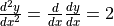
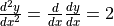
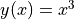

tf.GradientTape 详解¶
tf.GradientTape 的出现是 TensorFlow 2 最大的变化之一。其以一种简洁优雅的方式，为 TensorFlow 的即时执行模式和图执行模式提供了统一的自动求导 API。不过对于从 TensorFlow 1.X 过渡到 TensorFlow 2 的开发人员而言，也增加了一定的学习门槛。本章即在 第一章“自动求导机制”一节 的基础上，详细介绍 tf.GradientTape 的使用方法及机制。
基本使用¶
tf.GradientTape 是一个记录器，能够记录在其上下文环境中的计算步骤和操作，并用于自动求导。其使用方法分为两步：
使用 with 语句，将需要求导的计算步骤封装在
tf.GradientTape的上下文中；使用
tf.GradientTape的gradient方法计算导数。
回顾 第一章“自动求导机制”一节 所举的例子，使用 tf.GradientTape() 计算函数  在
在  时的导数：
时的导数：
import tensorflow as tf
x = tf.Variable(initial_value=3.)
with tf.GradientTape() as tape: # 在 tf.GradientTape() 的上下文内，所有计算步骤都会被记录以用于求导
y = tf.square(x)
y_grad = tape.gradient(y, x) # 计算y关于x的导数
print([y, y_grad])
在这里，初学者往往迷惑于此处 with 语句的用法，即“为什么离开了上下文环境， tape 还可以被使用？”。这样的疑惑是有一定道理的，因为在实际应用中，with 语句大多用于对资源进行访问的场合，保证资源在使用后得到恰当的清理或释放，例如我们熟悉的文件写入：
with open('test.txt', 'w') as f: # open() 是文件资源的上下文管理器，f 是文件资源对象
f.write('hello world')
f.write('another string') # 报错，因为离开上下文环境时，资源对象 f 被其上下文管理器所释放
在 TensorFlow 2 中，tf.GradientTape 尽管也可以被视为一种“资源”的上下文管理器，但和传统的资源有所区别。传统的资源在进入上下文管理器时获取资源对象，离开时释放资源对象，因此在离开上下文环境后再访问资源对象往往无效。而 tf.GradientTape 则是在进入上下文管理器时新建记录器并开启记录，离开上下文管理器时让记录器停止记录。停止记录不代表记录器被释放，事实上，记录器所记录的信息仍然保留，只是不再记录新的信息。因此 tape 的 gradient 方法依然可以使用，以利用已记录的信息计算导数。我们使用以下示例代码来说明这一点：
import tensorflow as tf
x = tf.Variable(initial_value=3.)
with tf.GradientTape() as tape: # tf.GradientTape() 是上下文管理器，tape 是记录器
y = tf.square(x)
with tape.stop_recording(): # 在上下文管理器内，记录进行中，暂时停止记录成功
print('temporarily stop recording')
with tape.stop_recording(): # 在上下文管理器外，记录已停止，尝试暂时停止记录报错
pass
y_grad = tape.gradient(y, x) # 在上下文管理器外，tape 的记录信息仍然保留，导数计算成功
在以上代码中， tape.stop_recording() 上下文管理器可以暂停计算步骤的记录。也就是说，在该上下文内的计算步骤都无法使用 tape 的 gradient 方法求导。在第一次调用 tape.stop_recording() 时， tape 是处于记录状态的，因此调用成功。而第二次调用 tape.stop_recording() 时，由于 tape 已经离开了 tf.GradientTape 上下文，在离开时 tape 的记录状态被停止，所以调用失败，报错： ValueError: Tape is not recording. （记录器已经停止记录）。
监视机制¶
在 tf.GradientTape 中，通过监视（Watch）机制来决定 tf.GradientTape 可以对哪些变量求导。默认情况下，可训练（Trainable）的变量，如 tf.Variable 会被自动加入 tf.GradientTape 的监视列表，从而 tf.GradientTape 可以直接对这些变量求导。而另一些类型的张量（例如 tf.Constant ）则不在默认列表中，若需要对这些张量求导，需要使用 watch 方法手工将张量加入监视列表中。以下示例代码说明了这一点：
import tensorflow as tf
x = tf.constant(3.) # x 为常量类型张量，默认无法对其求导
with tf.GradientTape() as tape:
y = tf.square(x)
y_grad_1 = tape.gradient(y, x) # 求导结果为 None
with tf.GradientTape() as tape:
tape.watch(x) # 使用 tape.watch 手动将 x 加入监视列表
y = tf.square(x)
y_grad_2 = tape.gradient(y, x) # 求导结果为 tf.Tensor(6.0, shape=(), dtype=float32)
当然，如果你希望自己掌控需要监视的变量，可以将 watch_accessed_variables=False 选项传入 tf.GradientTape ，并使用 watch 方法手动逐个加入需要监视的变量。
高阶求导¶
tf.GradientTape 支持嵌套使用。通过嵌套 tf.GradientTape 上下文管理器，可以轻松地实现二阶、三阶甚至更多阶的求导。以下示例代码计算了 在 时的一阶导数 dy_dx 和二阶导数 d2y_dx2 ：
import tensorflow as tf
x = tf.Variable(3.)
with tf.GradientTape() as tape_1:
with tf.GradientTape() as tape_2:
y = tf.square(x)
dy_dx = tape_2.gradient(y, x) # 值为 6.0
d2y_dx2 = tape_1.gradient(dy_dx, x) # 值为 2.0
由于  ，  ，故期望值为
，  ，故期望值为 dy_dx = 2 * 3 = 6 ， d2y_dx2 = 2 ，可见实际计算值与预期相符。
我们可以从上面的代码看出，高阶求导实际上是通过对使用 tape 的 gradient 方法求得的导数继续求导来实现的。也就是说，求导操作（即 tape 的 gradient 方法）和其他计算步骤（如 y = tf.square(x) ）没有什么本质的不同，同样是可以被 tf.GradientTape 记录的计算步骤。
持久保持记录与多次求导¶
默认情况下，每个 tf.GradientTape 的记录器在调用一次 gradient 方法后，其记录的信息就会被释放，也就是说这个记录器就无法再使用了。但如果我们要多次调用 gradient 方法进行求导，可以将 persistent=True 参数传入 tf.GradientTape ，使得该记录器持久保持记录的信息。并在求导完成后手工使用 del 释放记录器资源。以下示例展示了用一个持久的记录器 tape 分别计算 在 时的导数，以及  在  时的导数。
时的导数。
import tensorflow as tf
x_1 = tf.Variable(3.)
x_2 = tf.Variable(2.)
with tf.GradientTape(persistent=True) as tape:
y_1 = tf.square(x_1)
y_2 = tf.pow(x_2, 3)
y_grad_1 = tape.gradient(y_1, x_1) # 6.0 = 2 * 3.0
y_grad_2 = tape.gradient(y_2, x_2) # 12.0 = 3 * 2.0 ^ 2
del tape
图执行模式¶
在图执行模式（即使用 tf.function 封装计算图）下也可以使用 tf.GradientTape 。此时，其与 TensorFlow 1.X 中的 tf.gradients 基本等同。详情见 自动求导机制的计算图对比 * 。
性能优化¶
由于 tf.GradientTape 上下文中的任何计算步骤都会被记录器所记录，因此，为了提高 tf.GradientTape 的记录效率，应当尽量只将需要求导的计算步骤封装在 tf.GradientTape 的上下文中。如果需要在中途临时加入一些无需记录求导的计算步骤，可以使用本章第一节介绍的 tape.stop_recording() 暂时停止上下文记录器的记录。同时，正如我们在本章“高阶求导”一节所介绍的那样，求导动作本身（即 tape 的 gradient 方法）也是一个计算步骤。因此，一般而言，除非需要进行高阶求导，否则应当避免在 tf.GradientTape 的上下文内调用其 gradient 方法。这会导致求导操作本身被 GradientTape 所记录，从而造成效率的降低。
import tensorflow as tf
x = tf.Variable(3.)
with tf.GradientTape(persistent=True) as tape:
y = tf.square(x)
y_grad = tape.gradient(y, x) # 如果后续并不需要对 y_grad 求导，则不建议在上下文环境中求导
with tape.stop_recording(): # 对于无需记录求导的计算步骤，可以暂停记录器后计算
y_grad_not_recorded = tape.gradient(y, x)
d2y_dx2 = tape.gradient(y_grad, x) # 如果后续需要对 y_grad 求导，则 y_grad 必须写在上下文中
实例：对神经网络的各层变量独立求导¶
在实际的训练流程中，我们有时需要对 tf.keras.Model 模型的部分变量求导，或者对模型不同部分的变量采取不同的优化策略。此时，我们可以通过模型中各个 tf.keras.layers.Layer 层的 variables 属性取出层内的部分变量，并对这部分变量单独应用优化器。以下示例展示了使用一个持久的 tf.GradientTape 记录器，对前节 基础示例：多层感知机（MLP） 中多层感知机的第一层和第二层独立进行优化的过程。
import tensorflow as tf
from zh.model.mnist.mlp import MLP
from zh.model.utils import MNISTLoader
num_epochs = 5
batch_size = 50
learning_rate_1 = 0.001
learning_rate_2 = 0.01
model = MLP()
data_loader = MNISTLoader()
# 声明两个优化器，设定不同的学习率，分别用于更新MLP模型的第一层和第二层
optimizer_1 = tf.keras.optimizers.Adam(learning_rate=learning_rate_1)
optimizer_2 = tf.keras.optimizers.Adam(learning_rate=learning_rate_2)
num_batches = int(data_loader.num_train_data // batch_size * num_epochs)
for batch_index in range(num_batches):
X, y = data_loader.get_batch(batch_size)
with tf.GradientTape(persistent=True) as tape: # 声明一个持久的GradientTape，允许我们多次调用tape.gradient方法
y_pred = model(X)
loss = tf.keras.losses.sparse_categorical_crossentropy(y_true=y, y_pred=y_pred)
loss = tf.reduce_mean(loss)
print("batch %d: loss %f" % (batch_index, loss.numpy()))
grads = tape.gradient(loss, model.dense1.variables) # 单独求第一层参数的梯度
optimizer_1.apply_gradients(grads_and_vars=zip(grads, model.dense1.variables)) # 单独对第一层参数更新，学习率0.001
grads = tape.gradient(loss, model.dense2.variables) # 单独求第二层参数的梯度
optimizer_1.apply_gradients(grads_and_vars=zip(grads, model.dense2.variables)) # 单独对第二层参数更新，学习率0.01